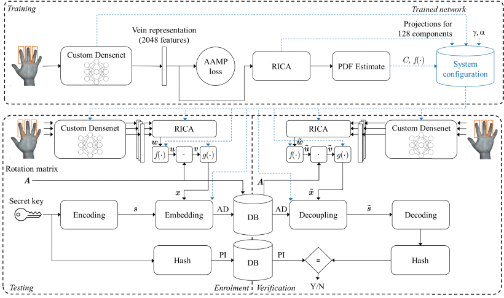

.
 This is the project I am most attached to. It is the main topic of my Ph.D. thesis, "Anonymous Biometrics", which was awarded the EAB Best Biometric Research 2020. The first part of the project started in 2014 with my Master's Thesis, work that was then refined and eventually published in 2017 as "A zero-leakage fuzzy embedder" in TIFS. Unfortunately, the second part of the work took a long time to get published. Although most of it was ready, the process was put on hold due to my departure from academia to the industry. With a bit of struggle, the second part came out in 2023 as "Unlinkable Zero-Leakage Biometric Cryptosystem", again in TIFS. The paper is open access, give it a chance
Sincerely, the reception of the work by the community hasn't been the best ever. At least, it is not proportional to the time and effort spent on it. Conrvesally, my most cited publication is the outcome of a three-month project and one cross-correlation.
I get it; the topic is niche, and the papers are full of equations, making them hard to read. Perhaps these few notes can lighten the story line.
Nowadays, we are all quite used to the use of biometrics. We use our fingerprints to unlock our smartphones; we use automated border control (ABC) systems that check out faces against the photo on our passports.
That's all fine: our fingerprint is stored and securely locked in the smartphone; your face would be on your passport regardless, and the ABC is just substituting a frustrated worker and making the queue shorter.
The problem comes when you want to use biometrics to get authenticated by a service provider, let's say your bank, or a bitcoin provider (see WordCoin, for instance).
In this case, there is a set of regulations the service provider must conform with. For example, in Europe, the General Data Protection Regulation (GDPR). According to GDPR, biometrics data fall into a broader class
of sensitive and personal data. For such data, processing, storage, and transmission have many restrictions. One of the main concepts is the minimisation of data collection: the level of sensitivity of the data that a user can be asked to donate should be proportional to the service itself. For example, one cannot ask for a DNA sample to open a social media account.
In addition, GDPR enforces that data protection should be implemented by design and by default. Note that, in contrast with the average understanding, storing a template instead of the raw biometric sample is insufficient, according to GDPR. The template, being by construction intimately connected to the user, must be considered sensitive as well.
One may say, just encrypt everything! Not quite that easy. Biometrics are noisy signals, and the comparison should be performed in plaintext (at least if we restrict it to conventional techniques).
For example, one can't just hash the biometric template as you would do with a password.
The solutions to the problem can be categorised into three classes, namely: Cancellable biometrics; Secure computation (Homomorphic Encryption); Biometric Cryptosystems.
Cancellable biometrics consist of a key-dependent, non-invertible transformation of the biometric template. The main weakness of these techniques is the lack of a proper security analysis framework.
In the secure computation paradigm, the biometric comparison is performed in the encrypted domain. This is possible thanks to techniques like Homomorphic Encryption. The main advantage of this paradigm is the well-understood security analysis. The main disadvantage is that the implementation can be pretty slow. Secure computation is, in fact implemented employing multi-party computation where the communication overhead can be the bottleneck.
There are few start-ups out there promoting the deployment of such protocols in the real world (for example, Keyless).
Biometric cryptosystems are a set of techniques that are specifically designed to deal with noisy data. Very similar techniques can be found in fields such as Physical Layer Security or Physically Unclonable Functions.
These techniques provide Information Theoretic security. The framework is extremely elegant, but its intrinsic disadvantages make the deployment to the real world quite challenging.
As we will see, these techniques mandate the security of the system to the entropy of the underlying biometric signal, potentially without the need for a secondary security factor. And this is the beauty and the doom of this framework. Even if we do everything right, we design a low noise acquisition system and learn the most reliable biometric representation; each biometric trait has its own entropy upper boundary. Even if we could find a biometric representation able to provide an effective 256-bit security, thus complying with current NIST security recommendations, if tomorrow the standard goes to 512, we can't just scale the biometric signal.
Hence, besides the extreme elegance of the provable secure cryptosystems based on the biometric single factor, the lack of scalability makes it impractical.
What I am saying here seems contradictory to my thesis, but it is not. The main goal of my project was to develop techniques that did not use any secret key, and I instead squeezed everything I could take from the biometric signal itself. On top of that, you may add standard cryptographic techniques.
A secure system is a complex infrastructure. My biometric cryptosystem is just a small brick that could be used to build a much taller building.
.
Choose the propoer address, depending on the topic